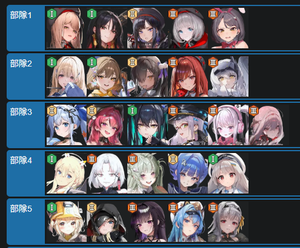

처음 뭐날리는데 그거 절대 뉴비 스펙에서 안부서지니까 힐은필수고
모든덱 힐이 필요할거같아서 힐러나 보호막 기믹채용
1번덱이 안굴러간다면 택티컬조합빼고 루주 블랑넣고 해도돼
애목단이아니라면 1번조합은 동d든 루주등으로 교체해줘야해
1덱 바밀크필수아니고 버스트가 깡공 뒤지게 높아서 부수기좋을거라 생각되서
1버 쓰고 부수는거 아무3버 써도 무관 힘들수는잇어도
2번덱은 특이사항없음 티아가 죽어도 완주 가능할수도잇음
3덱은 네온 아직 안나와서 흑련, 리버, 브래디등 넣어주고
4번덱은 솔린 티켓으로 체력뻥으로 엄폐등 버틸생각이니까 힐필요시 솔린버스트 누를것
완주가 목표입니다
5번덱 미하라가 선버로 해놨는데 패턴에 따라 유도리있게 헬름버스트 누를것
미하라는 신데등 강한 3버로 교체하면되고 모더니아는 토템딜러로 납둘것
이덱들은 할배들은 필요없고 한정없이 애장품없이 굴리는조합
아마 이러면 스톰브링어 클리어 보상은 먹을수도잇음
조합마다 아마 없는게 잇을거고 바소다 없으면 바소다 말고 3버 넣기
엄폐해도 못버티면 다음 20x+1 레벨에 도전하도록 뉴비화이팅
질문넣으면 다답변할게요